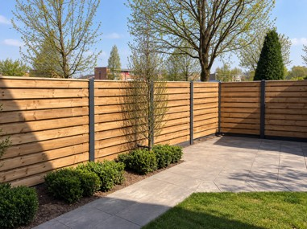
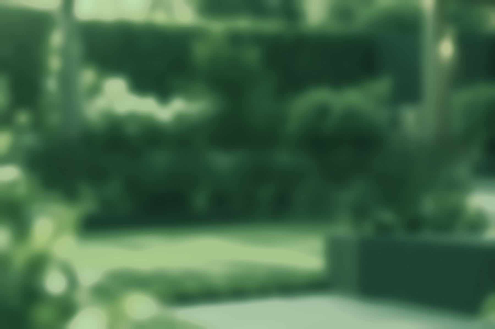
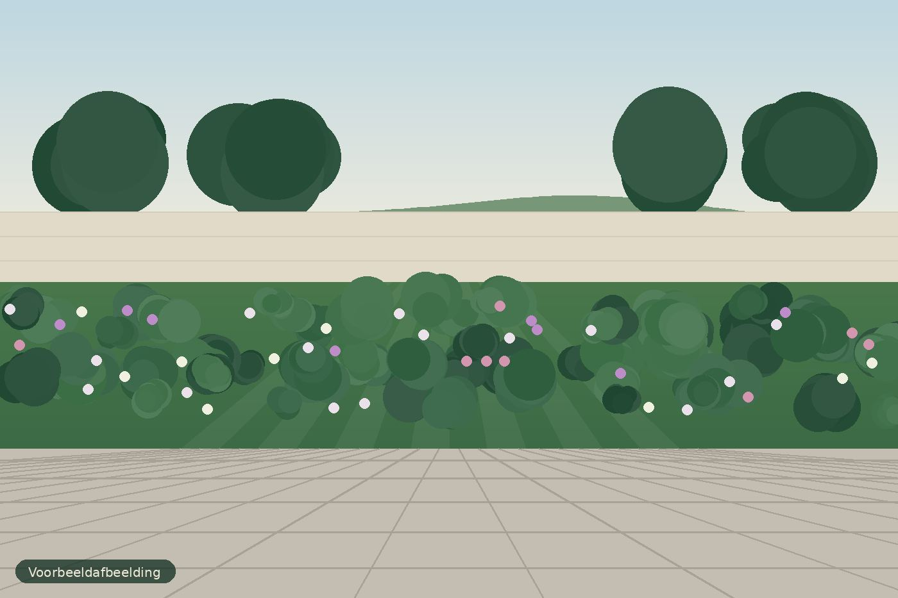
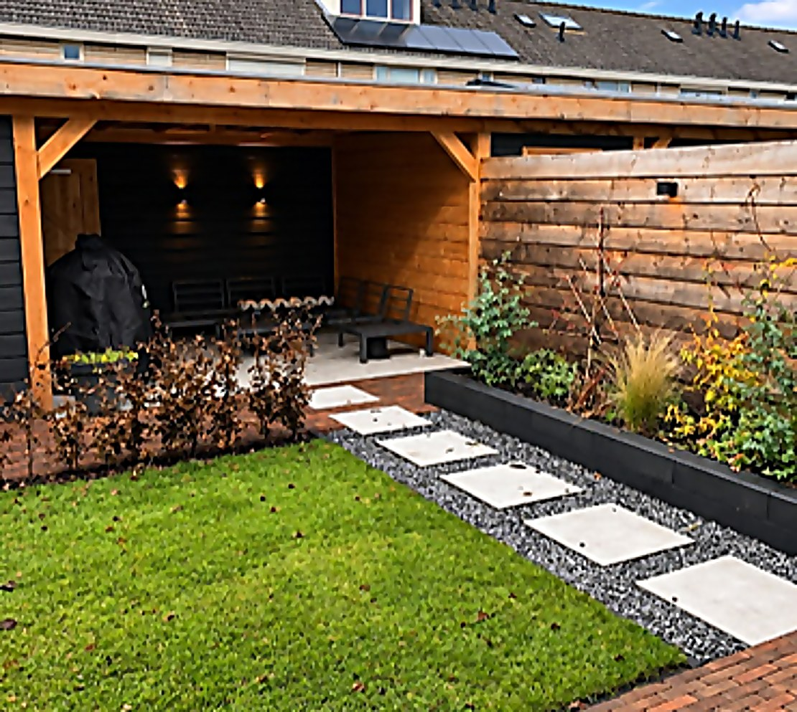
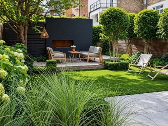

Tuinaanleg
Van een compleet nieuwe tuin tot het aanleggen van gazons, borders, terrassen en tuinpaden. Iedere tuin wordt praktisch en verzorgd aangelegd, passend bij de wensen van de klant.
Bekijk onze diensten
Van een compleet nieuwe tuin tot het vakkundig onderhouden van jouw bestaande tuin. Wij helpen je om het maximale uit je buitenruimte te halen.
Bij Binck Tuinen draait het om een tuin waar je écht van geniet. Als betrokken en betrouwbare hovenier letten we op kwaliteit, een nette afwerking en persoonlijke service.
Of je nu een nieuwe tuin wilt laten aanleggen, je bestaande tuin wilt vernieuwen of het onderhoud uit handen wilt geven: we denken met je mee, maken duidelijke afspraken en leveren een resultaat waar je jarenlang plezier van hebt. Neem gerust vrijblijvend contact met ons op om je wensen te bespreken.

Tuinaanleg, tuinrenovatie en tuinonderhoud. Kies een dienst of vertel ons wat je wilt.

Van een compleet nieuwe tuin tot het aanleggen van gazons, borders, terrassen en tuinpaden. Iedere tuin wordt praktisch en verzorgd aangelegd, passend bij de wensen van de klant.
Bekijk onze diensten
Geef een bestaande tuin een compleet nieuwe uitstraling. Denk aan het verwijderen van oude bestrating, het vernieuwen van borders, het plaatsen van kunstgras en het opnieuw indelen van de tuin.
Bekijk onze diensten
Regelmatig of eenmalig onderhoud, waaronder snoeien, onkruid verwijderen, maaien, heggen knippen en het netjes houden van de tuin.
Bekijk onze dienstenJe spreekt rechtstreeks met ons, zonder tussenlagen.
Een nette afwerking, van de eerste tot de laatste tegel.
Geen standaardplan: iedere tuin en elke wens is anders.
Je weet vooraf wat we doen en hoe we het aanpakken.
Een losse klus of vast onderhoud, het kan allebei.
Bekijk de sfeer en kwaliteit waar wij naar streven. Foto's van onze eigen projecten volgen binnenkort.
Vertel ons kort wat je wilt. We nemen persoonlijk contact met je op en kijken samen wat er mogelijk is.